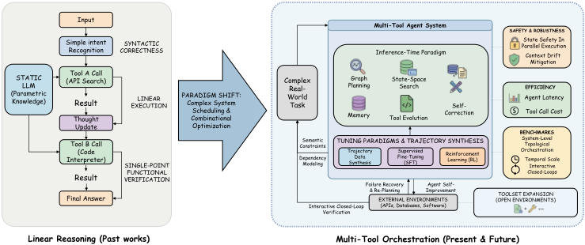
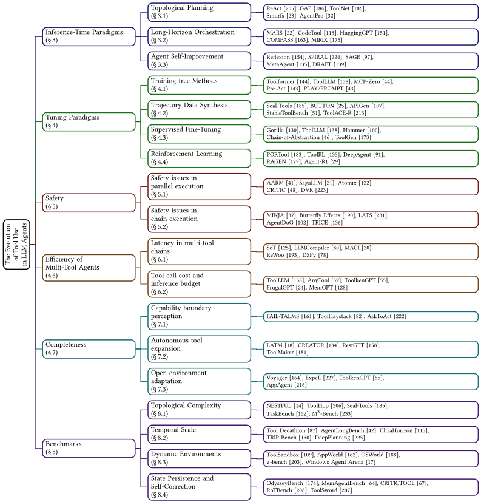
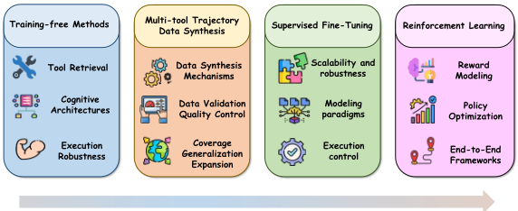
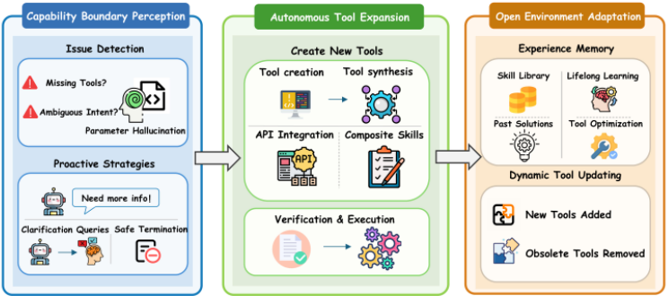
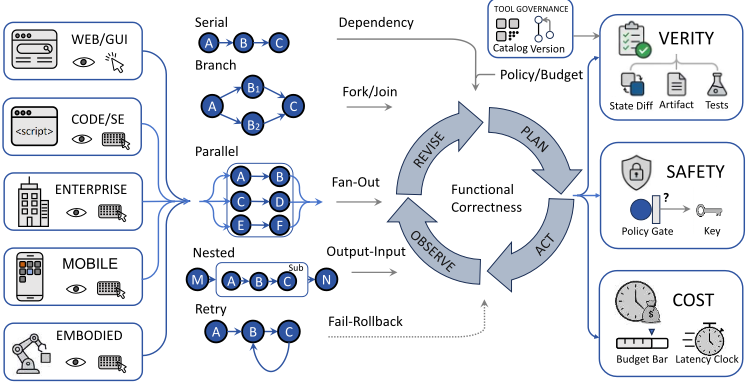

LLM Agent 中工具使用的演进：从单次工具调用到多工具编排
这篇 35 页的综述系统梳理了 LLM Agent 工具使用从'单次调用正确性'到'多工具长程编排'的范式转变，指出核心问题已变为动态工具子集选择、跨工具依赖建模、串/并行调度、失败恢复与状态一致性维护。全文按六个维度组织文献：推理时规划与执行、训练与轨迹构造、安全与控制、资源约束下的效率、开放环境能力完备性、基准设计与评测，并总结了软件工程、企业工作流、GUI 与移动系统中的应用编排模式。关键结论包括：线性 ReAct 式执行已不适应非线性依赖，领域正转向图结构执行、分层委派与'搜索-验证-提交'；长程与全局约束下模型性能急剧退化，评测正从端点成功转向过程级可靠性；工业落地需要工具治理、可观测性、审计与成本-延迟预算的系统性工程。对团队而言，这是一份覆盖 Agent 工具编排、记忆/上下文管理与评测体系的方法选型地图。
论文指出 LLM Agent 工具使用的研究重心已从'能否选对并正确执行一次工具调用'转变为'多工具长程编排'：Agent 需在长轨迹中协调多个工具、维护中间状态、从失败中恢复，并在延迟、成本与安全约束下运行；核心挑战不在工具访问本身，而在编排（orchestration），包括动态工具子集选择、跨工具依赖建模、串行/并行调度、失败恢复与重规划，以及并行写操作下的状态一致性与竞态条件。作者同时指出现有文献的两个缺口：概念混用（tool use、tool calling、tool retrieval、workflow execution、orchestration 常被笼统使用），以及规划、训练、安全、效率、评测、开放环境适应被割裂研究而部署系统依赖其交互。
综述方法，无单一新技术。论文先给出多工具学习统一形式化（查询、环境状态、工具清单与 schema、轨迹与成本感知目标），再按六维组织文献：(1) 推理时范式——拓扑规划（图/DAG 结构执行如 ToolNet、StructuredAgent，分层委派如 HIPLAN、ADaPT，状态空间搜索如 AB-MCTS、ARTIS）、长程编排（双系统架构、语义路由、程序性记忆，记忆压缩/结构化/外化如 COMPASS、A-Mem、MIRIX）、Agent 自我改进（Reflexion 式自纠错与 MetaAgent 式能力演化）；(2) 训练范式——training-free 方法（工具检索与发现如 ToolLLM、MCP-Zero，提示与示例构造如 PLAY2PROMPT，非参数记忆增强）、多工具轨迹数据合成（'合成-验证-扩展'框架如 APIGen、OrchDAG）、SFT 与 RL（过程奖励、turn 级策略优化如 GTPO、ARPO，端到端框架）；(3) 安全——并行执行与长链风险的事前静态约束、执行中事务管理（SagaLLM、Atomix）、事后动态验证三层防御；(4) 效率——并行执行、异步解耦、投机推理（ReWoo、DSPy）与动态工具检索、模型路由、缓存；(5) 能力完备性——能力边界感知、自主工具扩展（LATM、CREATOR）、开放环境适应；(6) 基准——拓扑复杂度、时间尺度、动态环境、状态持久性与自纠错四轴。最后给出应用侧统一抽象与工业级治理要点（工具治理、可观测性、成本-延迟预算）。
论文自身为综述，未提出新方法或开展新实验；以下为正文引用的量化发现
τ²-bench 双控制范式下，即使先进模型相比单 Agent 设置也出现 >40% 的性能下降
UltraHorizon 轨迹平均 400+ 次工具调用、200K+ tokens，用于严格测试上下文窗口饱和与记忆衰减
AgentLongBench 动态环境 rollout 最高达 400 万 tokens，显示模型在极端 horizon 下的动态信息合成急剧失败
TRIP-Bench 构造超过 150 次工具调用的旅行规划对话（含预算/时间硬约束），暴露单一约束违反级联导致整体失败的规划脆弱性
Tool Decathlon 以平均 20 轮交互建立长程评估基线；HammerBench 评估 10,000 个多轮对话实例
区别于已有综述（Qu et al. 的 tool learning、Shen 的工具使用、Li 的 Agent 范式、Chen et al. 的多 Agent 系统、He et al. 的安全隐私、Mohammadi et al. 的评测），本文将'多工具编排'而非泛化的工具使用或 Agent 系统作为主要分析单元；围绕推理、训练与轨迹构造、安全与控制、效率、能力完备性、评测六个相互关联的维度组织领域；厘清了 tool invocation、tool retrieval、orchestration、toolset expansion 等常被混用的概念边界；并将方法学进展与基准和应用中'从调用级正确性到系统级可靠性'的转变相衔接。
相关度级别：high
命中能力域：3.3 Agent 架构与工具使用 | 3.5 评测与可靠使用 | 3.1 上下文工程与记忆
理由：论文主题与团队核心关注点几乎完全重合：全文围绕 Agent 的工具调用与多工具编排，直接命中 3.3 的 Agent loop/harness 设计、工具调用、规划与单 Agent 执行可靠性；用整章覆盖基准评测、安全防护、成本效率与工业落地治理，命中 3.5 的评测方法、可靠性、成本优化与 AI 辅助工程实证；长程编排章节系统讨论记忆压缩、图结构记忆、技能库外化与工具检索降低上下文冗余，命中 3.1。应用章对软件工程（以确定性测试为验证闭环、上下文检索-补丁生成-测试验证的耦合）与企业工作流（事务一致性、审计、权限边界）的分析，与团队'代码生成与审查、测试辅助、知识库问答'场景直接对应。论文明确将自己与多 Agent 系统综述区分开（聚焦单 Agent 内多工具编排），故不命中 3.4；提示工程仅占一小节，不作为主要命中。作为综述，它为团队提供方法选型与评测设计的地图，而非单一可复制的技巧。
建议动作：深入精读并做内部分享
arXiv:2603.22862v2 [cs.SE] 2026年4月2日
HAOYUAN XU ∗、CHANG LI ∗，中国哈尔滨工业大学
XINYAN MA ∗、XIANHAO OU ∗，中国哈尔滨工业大学
ZIHAN ZHANG，美国哈佛大学
TAO HE、XIANGYU LIU、ZIXIANG WANG，中国哈尔滨工业大学
JIAFENG LIANG、ZHENG CHU、RUNXUAN LIU、RONGCHUAN MU，中国哈尔滨工业大学
DANDAN TU、MING LIU † 和 BING QIN，中国哈尔滨工业大学
中国华为技术有限公司
工具调用使大语言模型（LLMs）能够访问外部信息、调用软件系统，并在数字环境中执行操作，从而超越仅凭模型参数本身所能解决的范围。早期研究主要关注模型能否选择并执行正确的单次工具调用。然而，随着智能体系统的发展，核心问题已从孤立的调用转变为在长轨迹上进行的多工具编排，这些轨迹涉及中间状态、执行反馈、动态变化的环境，以及安全性、成本和可验证性等实际约束。本文全面综述了多工具 LLM 智能体的近期研究进展，并分析了这一快速发展领域的技术现状。首先，我们统一了任务形式化定义，并区分了单次调用的工具使用与长程编排。随后，我们围绕六个核心维度组织相关文献：推理时规划与执行、训练与轨迹构建、安全与控制、资源约束下的效率、开放环境中的能力完备性，以及基准测试（benchmark）设计与评估。我们进一步总结了软件工程、企业工作流、图形用户界面和移动系统中的代表性应用。最后，我们讨论了主要挑战，并展望了构建可靠、可扩展且可验证的多工具智能体的未来方向。
尽管大语言模型（Large Language Models, LLMs）在自然语言处理领域已展现出卓越的推理与生成能力 [121]，但其解决复杂现实问题的能力仍受限于静态的参数化知识、潜在的幻觉风险，以及缺乏与物理或数字环境的交互。工具学习（tool learning）通过使模型能够调用外部 API（例如搜索引擎、代码解释器）来应对这些局限，从而建立起感知-行动循环。TALM [129]、MRKL [76]、Toolformer [144] 和 ReAct [205] 等早期工作通过教会模型识别单一意图并正确格式化 API 请求，为该领域奠定了基础，实际上是将工具调用内化为一种扩展的语言能力。
随着任务复杂度的不断攀升，单一工具的线性应用已不足以应对现实世界的挑战。多工具利用构成了一个独立的研究问题，它与组合优化 [103]、程序化语义约束以及系统调度 [65] 相互交织。自主 Agent 的决策空间经历了质的转变：从简单的二元工具选择，转变为在单个任务内求解一系列相互耦合的决策。这一过程包括动态工具子集选择、跨工具依赖建模、串行与并行调度、故障恢复以及重新规划。当工具调用扩展到涉及状态变更写操作的长程链条时，在并行执行下维持状态一致性并管理竞态条件，便成为系统稳定性的核心瓶颈。
因此，该领域的主要研究目标已从单点调用的正确性转向复杂环境中多工具链的端到端可执行性与鲁棒性。我们首先回顾推理阶段（inference-time）的推理范式与架构，重点阐述从串行链式推理到基于图的结构化执行的转变，以及旨在平衡长程规划复杂性与执行效率的双系统架构。随后，我们探讨数据合成与训练范式，重点关注轨迹合成与闭环验证方法，以应对多工具使用的组合空间与长尾依赖问题。此外，我们分析了安全性与鲁棒性，尤其关注并行执行下的状态安全、扩展链中的上下文漂移 [142]，以及隐私风险的缓解策略。讨论还涵盖运行效率，评估端到端智能体（Agent）延迟、工具调用成本与推理预算 [127]。为解决系统完备性问题，我们回顾了针对工具或信息可能缺失的不完备环境的自适应策略。最后，我们梳理了基准测试（benchmark）评估标准从单点功能验证到系统级拓扑编排与交互式闭环的演进。基于上述现有挑战，我们提出了未来的研究议程，为构建可靠、高效且可扩展的多工具 Agent 系统提供理论参考与技术路径。
关于工具增强型大语言模型（LLM）的研究始于一个相对简单的问题：模型能否选择合适的工具并产生一次有效的调用？对于智能体（Agent）系统而言，这一抽象已不再足够。许多实际任务要求 Agent 在长轨迹中协调多个工具、保存中间状态、从失败中恢复，并在延迟、成本与安全等约束下运行。在这些场景下，关键挑战不仅在于工具访问，还在于编排。
本综述的动机源于当前文献中的两个空白。第一个是概念层面的：工具使用（tool use）、工具调用（tool calling）、工具检索（tool retrieval）、工作流执行（workflow execution）与编排（orchestration）等术语常被宽泛地使用，尽管它们指代的是不同的能力层级。第二个是结构层面的：规划、训练、安全、效率、基准测试与开放环境适应往往被分开研究，而实际部署的 Agent 系统却依赖于它们之间的交互。
3
越来越多的综述工作考察了大型语言模型（LLM）中的工具使用及相关 Agent 话题，然而长时程的多工具编排却较少被当作一个独立的首要问题来对待。Wang 等 [178] 从语言模型的视角考察了什么应当算作工具，并给出了外部工具的统一视图。Qu 等 [140] 综述了 LLM 中的工具学习，涵盖规划、工具选择、工具调用与响应生成。Shen [153] 回顾了 LLM 工具使用，重点关注工具集成、训练方法以及从工具使用到工具创造的转变。Li [89] 总结了基于 LLM 的 Agent 的主要范式，包括工具使用、规划与反馈学习。Luo 等 [116] 对 LLM Agent 进行了更广泛的综述，涵盖方法论、应用与挑战。Chen 等 [27] 关注的是基于 LLM 的多智能体（multi-agent）系统，而非单个 Agent 内部的多工具编排。He 等 [56] 综述了 LLM Agent 中的安全与隐私风险。Mohammadi 等 [123] 回顾了 LLM Agent 的评估与基准测试（benchmark）。
本综述与上述文献在若干方面有所不同。它以多工具编排——而非一般意义上的工具使用或更为宽泛的 Agent 系统——作为主要分析单元。它还围绕六个相互关联的维度来组织该领域：推理、训练与轨迹构建、安全与控制、效率、能力完备性以及评估。此外，它在先前工作中常被混用的概念之间划定了更清晰的边界，包括工具调用、工具检索、编排与工具集扩展。最后，它将方法论层面的进展与近期在基准测试和应用中从调用级正确性向系统级可靠性的转变联系起来。

记号。一个多工具学习实例包含：(i) 一个查询/任务 𝑞 ∈ Q；(ii) 一个交互式环境，其在第 𝑡 步具有潜在状态 𝑠 𝑡 ∈ S 和观测 𝑜 𝑡 ∈ O；(iii) 一个工具清单 D = { 𝑑 𝑖 } 𝑁 𝑖 = 1，其中每个工具 𝑑 由模式/签名 Σ 𝑑 描述（例如名称、描述、约束条件、返回格式）。工具执行接口为
其中 𝑢 ∈ U 𝑑 是工具 𝑑 的有效实参/参数对象，𝑓 ∈ F 是工具反馈（例如 JSON/文本/错误码），而 𝑠 ′ ∈ S 是调用后的环境状态。令 𝜋 𝜃 表示参数为 𝜃 的模型/策略。令 𝜏 表示一条工具使用轨迹（定义见下文），Cost ( 𝜏 ) 为任意代价泛函（调用次数、延迟、API 费用、风险等）。
4

我们将截至时刻 𝑡 的交互历史定义为
其中 𝑎 𝑘 是第 𝑘 步采取的动作，𝑓 𝑘 是 Exec 返回的反馈。令 𝑚 𝑡 表示模型在第 𝑡 步的内部记忆/状态（例如草稿板摘要或检索到的记录），其可作为 ( 𝑚 𝑡 - 1 , ℎ 𝑡 ) 的函数进行更新。
5
多工具编排。在每一步 𝑡，模型选择一个动作
其中工具调用动作为 𝑎 𝑡 = ( 𝑑 𝑡 , 𝑢 𝑡 )，满足 𝑑 𝑡 ∈ D 且 𝑢 𝑡 ∈ U 𝑑 𝑡，而 Finish ( 𝑦 ) 则以最终答案 𝑦 ∈ Y 终止。策略以历史和记忆为条件来执行动作：
若 𝑎 𝑡 = ( 𝑑 𝑡 , 𝑢 𝑡 )，则环境返回反馈并进行转移：
其中 ⊕ 表示追加新的交互记录，𝑜 𝑡 + 1 是由 𝑠 𝑡 + 1 导出的下一观测。轨迹定义为
其中视界 𝑇 可变。一个通用的代价感知目标为
其中 𝜆 ≥ 0 用于在成功与代价之间进行权衡。该目标刻画了长视界调度、失败恢复以及基于工具/环境反馈的重新规划。
多工具调用构成了 Agent 规划与推理的一次根本性转变。随着工具空间扩展至涵盖数千个 API 以及非线性依赖关系，传统的自回归生成模型难以应对上下文限制与级联错误。这一转变促使人们对 Agent 推理时范式进行实质性的重新思考。近期研究聚焦于任务拓扑规划、显式搜索算法、反思与自我改进，以及结合持久记忆的系统级编排。本节将围绕这些关键方向系统性地综述代表性工作。
ReAct [205] 等传统范式将工具调用组织为顺序轨迹。这种结构隐含地假设任务可以线性分解。尽管这种线性方法对于简单的单步检索非常有效，但在应用于嵌套调用、并行 I/O 操作或长程目标时，它会表现出严重的结构失配。线性约束天然地限制了数据流依赖关系的表示，排除了独立操作的并行执行，并迫使早期决策错误在整个轨迹中不断累积。因此，该领域已迅速转向利用表达能力显著更高的结构进行拓扑感知规划。
随着工具空间扩展至数以万计，主要挑战从二元选择转向依赖感知的组合式决策。其中一条研究路线将工具调用表示为显式的依赖结构，使 Agent 能够对异步或部分可并行化的子问题进行推理 [99, 184]。ToolNet 和 StructuredAgent 等相关系统通过有向图或 AND/OR 分解对可复用的转移结构进行编码，在保留非线性任务依赖的同时缩小了有效搜索空间 [106, 108]。AutoTool 进一步表明，工具转移中的历史规律性可用于为工作流中可预测的部分跳过不必要的推理 [72]。综合来看，这些方法将工具调用视为图结构化的执行，而非扁平的 token 序列。
6
为了解决长程任务中的目标漂移问题，单体式规划算法正日益被分层委派所取代。HIPLAN 提出了一种双层架构，由上层规划器生成宏观的里程碑空间，而将具体状态差距的解决留给下层执行器 [94]。ADaPT 引入了一种递归表示，其默认采用扁平执行，仅在遇到局部失败时才调用高层图分解 [132]。AFlow 则进一步推进抽象层次，将推理过程表示为可执行的节点配置与控制流边 [219]。D-PoT [221]、DyFlow [176] 和 ReCAP [226] 等动态规划器进一步允许对子目标进行实时重组。
由于自回归解码本质上具有短视性，近期方法将多步工具执行建模为状态空间搜索问题。传统树搜索在语言领域中常常受到上下文污染的困扰。Smurfs 引入了上下文高效的回滚与分支隔离，减少了来自失败轨迹的污染 [23]。AB-MCTS 在外部反馈下探索自适应分支，而 ARTIS 则通过一个面向高风险动作的内部模拟器将探索与承诺分离 [70, 214]。与之密切相关的方法，包括 Plan-and-Act、MPO 和 AgentPro，同样将抽象规划与执行分离，或利用学习到的评估器在推理过程中剪除低质量分支 [32, 40, 191]。这些方法反映了从“生成一次、然后执行”到“搜索、验证、然后提交”的更广泛转变。
当任务复杂度超出单个模型的认知局限时，推理便转向系统级架构。这一维度强调认知分工、标准化的语义路由以及长期动态记忆，以确保在开放式环境中保持稳健的性能。
受双过程推理的启发，MARS 将对大型工具输出的快速解析与较慢的审慎推理分离开来 [22]。在执行要求严格的领域中，CodeTool 引入了结构化中间表示，使进展更易于验证 [113]。另一些系统则将持久性的技能或工作流外化为程序性记忆。DeepAgent 将工具发现集成到连续的推理流中 [91]，而 MACLA 和 HiAgent 则在长任务和重复会话中显式维护可复用的程序性抽象 [45, 63]。其共同目标是避免将编排的全部负担置于单个瞬态上下文窗口之内。
一个相关的挑战是在庞大的工具生态系统中进行动态调度。HuggingGPT 等早期框架展示了跨异构专家模型进行集中式规划与语义路由的价值 [151]。后续工作表明，将工作流分解为规划器、调用器与摘要器角色，可以使较小的模型与更大的单体智能体有效竞争 [149]。随着工具访问日趋标准化，Gradientsys 等调度器在容量与可观测性约束下协调多个专用执行器 [156]。Tool-to-Agent Retrieval 通过对工具及其父智能体进行联合索引扩展了这一思想，在检索过程中同时保留调用粒度与执行上下文 [114]。这些系统表明，长时程能力不仅取决于推理质量，还取决于执行职责的路由与监控方式。
记忆是长时程编排的第三个核心组件。原始轨迹过于庞大且充满噪声，难以在长时间交互中保持完全可用，因此实用的系统会对执行历史进行压缩、结构化或外化。COMPASS 和 Acon 将已完成的子任务总结为紧凑的进展表示，以保持与全局目标的一致性 [75, 163]。另一些方法使用图结构或类型化记忆，以支持更长时间尺度上的检索与更新。A-Mem 在历史状态之间构建语义链接 [196]，MIRIX 将记忆分解为多个专用存储以支持持久的多模态交互 [175]，而 SEDM 则将记忆视为多智能体协作的共享资源 [194]。纵观这些系统，主要的设计问题不在于是否存储更多历史，而在于如何在抑制噪声与过时分支的同时，保留那些对决策仍然相关的部分。
7
推理时的能力不仅日益受到规划与记忆的塑造，也受到自我改进机制的影响。在多工具场景中，错误往往源于参数绑定错误、无效假设或低效的恢复策略。因此，许多近期系统显式地学习在执行过程中或执行之后诊断并修正自身的轨迹。
第一类方法聚焦于自我纠正。Reflexion 将先前失败中总结出的语言化经验教训存储下来，并用其指导后续尝试 [154]。Failure Makes the Agent Stronger 框架将诊断与修复转化为显式动作，并在受扰动的轨迹上通过基于奖励的优化进行训练 [159]。SPIRAL 和 PreFlect 进一步约束或预判反思行为，以减少无效循环并在执行前捕获可能发生的失败 [165, 224]。SAGE 和 Plan2Evolve 通过将反思与记忆及规划修复相结合，将这一思想扩展为持续改进 [66, 97]。
第二类方法将改进视为能力演化，而非孤立的纠正。MetaAgent 将积累的经验蒸馏为可复用的工具与内部知识，使 Agent 无需额外的模型训练即可改进其未来的推理与工具调用策略 [135]。Test-Time Tool Evolution 通过在推理期间合成并验证新的可执行工具，将这一方向进一步推进 [110]。DRAFT 和 SWE-Adept 同样根据执行反馈修订工具描述或工具-记忆接口 [59, 139]。这一系列工作表明，推理正日益成为一个自适应循环：Agent 不仅使用工具生态系统，还会在解决任务的同时重组并改进该生态系统。
尽管大语言模型（LLM）在广泛的自然语言任务中展现出卓越的泛化能力，但将其部署为多工具编排场景中可靠的 Agent 仍是一项艰巨的挑战。原始预训练模型或通用模型在 schema 遵循、参数精度和长程规划方面经常表现出不足，这在复杂的多工具任务中极易导致执行失败或幻觉。为了弥合通用模型与专用多工具 Agent 之间的差距，研究者已提出多种适配策略，以增强模型在工具感知、工具选择和精确执行方面的熟练度。如图 3 所示，本章对多工具 Agent 调优（Multi-tool Agent Tuning）方法进行了系统性分类，并按照计算开销和数据依赖性递增的顺序加以组织：我们首先研究免训练方法（Training-free Methods），这类方法无需参数更新即可激活工具调用能力；随后介绍作为关键数据基础的多工具轨迹数据合成；接着介绍监督微调（SFT），用于使模型与特定的工具调用语法和规划模式对齐；最后讨论强化学习（RL）框架，该框架利用环境反馈来提升 Agent 的自我进化能力和决策鲁棒性。
Training-free methods enhance multi-tool agents without updating LLM parameters, offering low deployment overhead and strong adaptability to newly introduced tools. Rather than altering the agent's internal reasoning mechanism, these methods improve tool use through external augmentation, primarily along three directions: tool retrieval and discovery, prompt engineering, and non-parametric memory augmentation.
A major line of work studies tool retrieval and discovery. As the number of available APIs grows, exhaustively including tool documentation in the prompt becomes impractical. To address this Organized in an ascending order of computational overhead and data dependency issue, ToolLLM [138] and AnyTool [39] employ retrieval-based mechanisms to dynamically select relevant tool descriptions from large tool repositories. ToolDreamer [145] further improves retrieval quality by generating idealized tool descriptions as search queries, thereby better aligning user intents with real-world APIs. MCP-Zero [44] extends passive retrieval to active discovery, enabling agents to request tool schemas on demand and thus reducing context redundancy. Re-Invoke [28] similarly improves zero-shot tool selection through multi-perspective query rewriting. Another line of work focuses on prompt and exemplar construction for tool use. PLAY2PROMPT [43] allows agents to autonomously explore tool behavior and synthesize usage instructions together with few-shot exemplars, thereby improving tool invocation without SFT. Finally, some methods enhance robustness through non-parametric memory augmentation. Memento [232] equips agents with episodic memory by retrieving successful historical trajectories to support current decision-making. GenTool [58] improves robustness through simulation under diverse conditions, such as missing or updated tools, thereby helping agents generalize to dynamic tool environments.
8

高质量的训练数据是构建鲁棒多工具 Agent 的基石。然而，真实场景中工具执行日志的获取受到隐私法规、访问权限以及多样化场景稀缺性的制约，使得大规模人工标注并不切实际。因此，合成数据生成已成为主导范式。近期文献揭示出一种向“合成—验证—扩展”（Synthesis-Validation-Expansion）框架演进的系统性趋势，标志着研究重心从基础的数据可用性向多工具组合空间的全面覆盖进行了战略性转移。该范式旨在合成能够涵盖长程交互、跨工具依赖以及复杂场景中错误恢复机制的训练轨迹，从而增强 Agent 应对错综复杂任务的能力。
在数据合成机制方面，诸如 Seal-Tools [185] 和 Luo 等人 [117] 的早期自举（self-bootstrapping）方法表明，大语言模型（LLM）无需专家演示即可生成大量工具调用数据。较新的方法则致力于改进结构与组合性，而非仅仅追求规模。BUTTON [25] 将自底向上的指令构建与自顶向下的轨迹生成相结合，以合成具有组合性的交互轨迹；而 ASTRA [160] 则利用工具调用图的拓扑结构，在规则可验证的环境中生成具有结构依据的轨迹。
在数据验证与质量控制方面，近期进展聚焦于基于执行的迭代验证。随着合成数据规模的不断增长，仅凭格式进行过滤已显不足。为此，APIGen [107] 通过包含语法检查、实际执行与语义验证的分阶段校验来验证数据。StableToolBench [51] 借助模拟器与缓存机制降低了易变 API 带来的不稳定性。ToolACE-DEV [68] 与 ToolACE-R [213] 则进一步迈向迭代修复，利用自我改进与模型感知的精炼，使合成数据能够适应学习器不断演进的能力。
在覆盖与泛化扩展方面，众多方法致力于拓展工具组合空间的边界，以应对真实世界的复杂性。ToolMind [199] 通过构建大规模、推理密集型的数据集，推进了面向组合空间覆盖的数据工程。为增强针对执行错误的鲁棒性，LoopTool [220] 将失败驱动的合成加以制度化，构建了能够映射真实世界失败分布的数据闭环。面向复杂编排，OrchDAG [112] 将工具执行建模为复杂度可控的有向无环图（DAG），为多轮交互提供了结构化的基准测试（benchmark）。总体来看，这些进展反映出一种新的共识：合成数据的关键指标已不再是单纯的数量，而是对长尾效应、复杂交互效应以及多步错误模式的系统性覆盖。
监督微调（Supervised Fine-Tuning, SFT）是赋予大语言模型（LLM）工具调用能力的基础对齐阶段。在从原子化工具调用向多工具编排的范式转变过程中，SFT 的目标经历了根本性的转变。早期方法主要强调语法对齐——即确保输出的结构完整性（例如符合 JSON schema）。Gorilla [130] 与 GPT4Tools [202] 等开创性工作表明，在高质量的（Instruction, API Call）数据对上进行微调，能够使模型有效掌握 API 语义匹配与参数填充技能。然而，单纯的数据积累已不足以应对复杂的编排任务。因此，近期的进展已转向更加专门化的目标，例如从海量工具库中进行工具选择，以及工具间依赖关系规划。
为应对大规模且含噪的工具选择问题，ToolLLM [138] 通过在深度优先搜索（Depth-First Search）决策轨迹上进行训练，将 SFT 扩展至海量工具集，使模型能够内化针对无法解决场景的探索与试错策略。Hammer [100] 在微调过程中引入函数掩码（Function Masking），以惩罚幻觉并提高对无关工具的敏感度，为鲁棒的端侧函数调用树立了新的标杆。为优化推理与行动之间的相互作用，Chain-of-Abstraction [46] 提出了一种两阶段解码策略；该方法先训练模型生成带有占位符的抽象推理链，随后再用具体的工具输出对其进行填充，从而有效地将通用推理与领域特定知识检索解耦。ToolGen [173] 将工具检索与参数生成统一为一系列可生成的虚拟 token（generative virtual tokens），重构了 SFT 目标，使工具语义与参数结构能够在单次自回归过程中被同时学习，从而显著缓解了级联错误。最后，针对任务粒度问题，Granite-Function Calling Model [5] 采用多任务学习框架，将工具使用分解为细粒度的子任务——例如工具检测、参数生成与响应格式化——从而实现对整个执行生命周期的精确控制。总体而言，这些进展表明，SFT 已超越简单的模式模仿，迈向构建具备高层决策能力与严格执行能力的自主系统。
尽管 SFT 能够有效地使模型对齐基本的工具调用语法，但其本质上仍受行为克隆（Behavioral Cloning）范式的制约。通过 SFT 训练的模型往往局限于对训练轨迹的短视模仿，难以在长程任务中进行自我纠正，也难以在开放式的工具空间中探索新路径。因此，研究重心正转向强化学习（Reinforcement Learning, RL）与环境反馈，以优化高层决策。随着该领域从单工具触发向多工具编排过渡，RL 面临着严峻的挑战：稀疏的奖励信号、困难的信用分配以及训练不稳定性。为此，近期的进展已超越 PPO 或 GRPO 等标准算法，发展出以过程奖励设计、轮次级策略优化和端到端智能体框架为核心的专门范式。这些创新旨在使智能体从被动执行者演化为自适应规划器，从而具备稳健的错误恢复能力与策略性探索能力。
在奖励建模与信用分配方面，为弥合稀疏的结果奖励与复杂多步推理之间的鸿沟，研究界已建立起一套完整的奖励优化闭环。针对长链条中成功信号稀疏的问题，PORTool [183] 将树搜索生成的质量信号融入策略梯度更新，而 Tool-Star [34] 则设计了分层奖励机制，以解决多步推理中的信用分配问题。在迈向系统化奖励工程的过程中，ToolRL [133] 对奖励粒度开展了全面研究，提出了超越简单通过/失败指标的原则性奖励设计，以稳定训练过程。类似地，ToolRM [8] 训练了一个专用的结果奖励模型（Outcome Reward Model）来评估基于工具的推理，在复杂场景中表现优于通用验证器。为强化中间步骤，Wei 等人 [180] 引入了可验证的轮次级奖励，将 RL 算法加以扩展，以处理多轮搜索任务中的细粒度信用分配。
在策略优化与算法适配方面，标准强化学习（Reinforcement Learning, RL）算法往往难以适应智能体任务中剧烈的动态变化。DeepAgent [91] 探索了 ToolPO（Tool Policy Optimization，工具策略优化），该方法利用由 LLM 模拟的 API 环境进行低成本探索，从而解决了使用真实 API 进行训练所带来的高成本与不稳定性问题。同时，它引入了细粒度优势归因（Finegrained Advantage Attribution），将奖励信号精确分配至触发工具调用的特定 token，从而显著提升了开放集工具检索的稳定性。针对 GRPO 中轨迹级奖励的局限性，GTPO [33] 创新性地采用了轮次级奖励分配与基于回报的优势估计，有效防止了迭代推理过程中的训练停滞。此外，为缓解工具交互后的熵尖峰（Entropy Spikes）问题，ARPO [35] 引入了基于熵的自适应回滚机制，以动态平衡全局探索与局部利用。RAGEN [179] 识别出了智能体训练中特有的回声陷阱（Echo Trap）现象，并提出 StarPO 算法，通过轨迹级优化来稳定学习过程。
在端到端框架方面，ToRL [92] 证明了 RL 能够在无需前置 SFT 阶段的情况下，直接从基座模型扩展工具调用能力，从而解锁了自我调节等涌现行为。最后，Agent-R1 [29] 通过扩展马尔可夫决策过程（Markov Decision Process, MDP）框架，对 LLM 智能体进行了全面定义，为端到端强化学习提供了一个模块化且可扩展的系统。
11
工具增强智能体的安全态势已从单纯的恶意文本生成，转变为在数字或物理环境中执行有害动作。尽管单工具漏洞——如间接提示注入 [49]、未授权执行与权限提升 [79]、隐私泄露以及工具辅助攻击 [15, 56, 147]——已被充分记录，但向多工具编排的转变显著扩大了系统的攻击面。在多工具系统中，安全性不再由孤立 API 调用的合法性所决定，而是由复杂的、跨工具且跨时间步的执行结构所决定。这些交互突破了传统信任边界，局部的恶意输入或模型幻觉很少再是孤立事件；相反，它们往往会通过工具链上下文引发“状态污染”，导致攻击的级联式传播。本章研究多工具编排中固有的新型安全挑战与防御机制。基于工具链的拓扑执行逻辑，我们将多工具安全风险划分为两个既相互区别又相互关联的维度：（1）并行执行中的安全风险；（2）长时程工具链中的安全风险。
在多工具编排架构中，并行执行显著提升了智能体处理复杂任务的效率；然而，它也引入了潜在的安全漏洞。对于无副作用的读操作（如网页检索、信息查询），并行化相对安全；而在工具链中集成写操作（如数据库更新、事务提交）则存在竞态条件（race condition）风险，导致系统状态不一致。因此，多工具并行化的核心挑战在于如何在并发环境中维持状态完整性。
近期研究表明，这一风险并不仅仅是实现层面的细节问题。Les Dissonances 证明，当大语言模型（LLM）并发调用相互依赖的工具时，恶意载荷能够跨越工具边界传播并污染后续执行 [95]。针对多轮对话中有状态工具调用的相关分析发现，可靠性失效往往遵循一条可识别的路径：从参数漂移到状态污染，再到不可恢复的下游调用 [166]。SagaLLM 通过将工具调用建模为具有事务语义与回滚逻辑的有界工作流，使这一问题显式化 [21]。综合来看，这些研究表明，安全的并行化不仅需要更好的提示工程，还需要对副作用和执行范围进行显式控制。
为应对这些挑战，近期研究开始将分布式系统与软件工程中的事务管理范式引入 LLM 编排框架。现有方案呈现出一条从“执行前静态约束”到“执行中事务管理”、并最终到“执行后动态验证”的演进轨迹：
执行前静态约束：在工具被并发触发之前拦截潜在冲突的动作，构成第一道防线。在系统实现层面，AARM 规范 [41] 与 AgentSpec [167] 提出了基于拦截的运行时强制机制。这些方法通过在执行前深度注入意图对齐与安全策略，阻断非法的并发请求。对于复杂环境，Self-Verification Sampling [50] 通过执行前自验证预先过滤高风险写操作，从而降低写入后不可逆场景的灾难性概率。
执行中事务管理：由于并发错误在执行期间本质上难以被彻底根除，研究人员开始为智能体赋予事务语义。SagaLLM [21] 与近期的 Atomix 框架通过将工具调用视为有界工作流而取得了突破。Atomix 引入了基于纪元（epoch）的并发隔离与资源前沿追踪 [122]，使无害的副作用得以进行延迟提交，并在发生中止时通过补偿逻辑实现安全回滚。这一设计呼应了 Generator-Assistant 框架 [90] 中的局部化检查点机制，该机制将错误的影响严格限制在局部范围内。
12
| Risk | Failure Mode | Defense |
|---|---|---|
| Concurrent Conflict | Race conditions, write interference, and corrupted shared states. | Dependency-aware scheduling, policy gating, and pre-dispatch verification [41, 95, 167]. |
| Partial Commit | Irreversible side effects leave globally inconsistent states. | Transaction-style isolation, delayed commit, compensation, and rollback [21, 90, 122]. |
| Post-Execution Anomaly | Safety violations emerge only after tool execution. | Critic/verifier-based auditing and execution-time checking [48, 54, 223]. |
| Memory/Plan Poisoning | Malicious context persists across steps and reactivates later. | Trajectory-level verification, meta-verification, and evidence-based rejection [37, 119, 136]. |
| Long-Horizon Drift | Error accumulation, state pollution, and confused-deputy behavior. | Lookahead search, rollback, and trace diagnosis [102, 190, 231]. |
| Risk | Failure Mode | Defense |
执行后动态验证：为应对超出静态约束所能覆盖范围的异常场景，必须将执行后验证逻辑集成到系统中，以形成闭环反馈机制。CRITIC [48] 通过交互式批判实现自我纠错；VerifiAgent [54] 将验证逻辑工程化为协作式的 Verifier-Executor 组件架构；与此同时，DVR [223] 从图结构化调度的视角切入该问题，将验证子图无缝嵌入主执行图中。这为并行执行的安全审计提供了一个通用模板。
在长时程工具链中，安全威胁表现为跨时间维度的隐蔽传播与级联放大。随着智能体扩展多步调用序列，中间变量与参数绑定的持续引入使系统容易受到智能体漂移（Agent Drift）[142] 的影响。在此过程中，上下文窗口的污染与自回归误差的累积导致行为模式偏离既定的安全基线。在对抗性环境下，这种“上下文漂移”会演变为具有破坏性的跨工具状态污染（Cross-Tool State Contamination）。一旦恶意数据被引入中间结果，其在后续步骤中的无差别复用便会触发级联失效，最终使系统的信任边界崩溃。
围绕这一时间维度上的脆弱性，近期文献识别出了长时程编排所特有的新型攻击模式。攻击已从单步操纵演化为更为复杂的记忆投毒与计划注入。例如，MINJA 式攻击通过表面无害的读取操作注入恶意内容，并使其驻留在记忆中，直至影响后续动作 [37]。计划注入（Plan Injection）攻击则操纵多步推理本身的结构，无需明显恶意的最终指令即可引导智能体绕过护栏 [26]。工具链中的蝴蝶效应（Butterfly Effects in Toolchains）进一步展示了微小的上游偏差如何通过变量绑定与参数复用被放大，使下游工具沦为“困惑代理人”（confused deputies），其不安全行为的根源在于早得多的步骤 [190]。
为缓解长时程执行过程中的恶意累积与状态劫持，防御机制正从单步结果过滤转向轨迹级动态干预与闭环审计。Reflexion 通过语言反馈记忆提供了一种早期的修正形式，但后续工作更加侧重于基于执行的验证 [154]。
13
TRICE、Tool-MVR 与 ToolReflection 分别利用执行证据、多智能体验证或结构化返回，在更长的轨迹上识别并纠正错误 [119, 131, 136]。LATS 将搜索与回滚相结合，并在下游风险显现时采取熔断行为 [231]。另一些系统则聚焦于诊断而非单纯的拒绝：AgentDoG 强调对完整执行链的根因归因 [102]，而 Thought-Aligner 则更早介入，在不安全动作产生之前纠正有风险的内部推理 [73]。总体方向是使长时程执行变得可检查、可中断且可修复。
除了在推理阶段引入动态审计之外，针对长程多工具安全量身定制的专门训练方法，对于从基础模型层面提升防御上限而言至关重要。由于传统的基于人类反馈的强化学习（RLHF）以单轮对话为基础，难以覆盖长程工具链的复杂状态空间，模型对齐正朝着涵盖整个多步调用轨迹的方向演进。最新的 Agent 安全对齐框架为强化学习引入了定制化的沙箱（Sandbox）环境 [146]，迫使模型在面对模糊或恶意输入时执行“执行-拒绝-验证”（perform-reject-verify）确认机制。与此同时，为了对抗由长程交互引发的记忆污染，情景记忆巩固（Episodic Memory Consolidation）机制 [142] 被用于周期性地压缩交互历史并清除潜在的恶意载荷。通过将经由自动化红队测试生成的对抗性工具链整合为对齐微调的负样本，底层大语言模型（LLM）的抗干扰韧性及其参数提取的鲁棒性——尤其是在面对不可靠记忆和恶意中间状态时——得到了根本性增强。
外部工具的集成显著增强了 Agent 应对复杂任务的能力。然而，对多步推理和顺序工具调用的依赖引入了显著的效率瓶颈。本章从两个主要视角综述了新兴的优化策略：缓解多工具链中的延迟（§6.1），以及管理工具调用成本与推理预算（§6.2）。
LLM 推理严格依赖于先前工具结果的完成与返回，这导致端到端系统延迟随任务步数呈线性甚至指数级累积 [80]。为应对这一效率瓶颈，近期研究聚焦于重构执行机制，并逐步演化为三种核心优化范式：并行执行（§6.1.1）、异步解耦（§6.1.2）与推测性推理（§6.1.3）。
6.1.1 并行执行。为解决长链多工具调用中顺序执行所导致的累积延迟与低效问题，并行执行 [234] 已成为一个关键优化方向。其核心思想是对任务进行分解，识别出彼此之间没有相互依赖关系的子任务，并同时执行它们。SoT [125] 通过并行展开多个骨架分支，而非遵循完全顺序的解码模式，从而加速推理。在工具层面，LLMCompiler [80] 显式地规划任务依赖关系，使相互独立的工具调用能够并发运行。对于更长的工作流，M1-Parallel [217] 进一步将顺序任务分解为由多个 Agent 协调的独立子任务。并行化的规划-执行 [93] 通过重叠规划与执行扩展了同一思想，使得在当前动作仍在运行的同时即可准备后续步骤。综合来看，这些方法表明，当依赖结构明确且副作用得到充分控制以避免无效的并发动作时，并行执行最为有效。
14
6.1.3 推测推理（Speculative reasoning）。与从系统架构视角进行优化的异步解耦不同，推测执行（Speculative Execution）借鉴了计算机体系结构中的分支预测概念，旨在通过算法前向预测来掩盖长工具链中的等待延迟。该机制以推测解码（speculative decoding）[85]为基础，使模型无需等待完整的自回归循环即可推测性地生成后续动作标识符。在工具调用领域，ReWoo [193]是这一方法的典型示例：通过将推理与观察解耦，它推测性地生成包含预期工具输出的完整执行图，仅在推测正确时才提交执行，从而显著减少了与外部工具环境交互时的冗余延迟。为提高推测的准确性，LATS [231]引入了一种基于前瞻搜索（lookahead search）的推测模拟机制，在实际调用不可逆的 API 之前，Agent 会推断并评估多种可能的工具交互轨迹。类似地，ToT [204]利用推测性分支探索来预测不同工具组合的最终收益，显著降低了复杂任务中因工具调用失败而产生的回溯时间成本。对于延迟问题尤为严重的检索工具，REST [62]提出了一种基于检索的推测解码框架，能够依据外部知识库的缓存结果提前预测大模型后续生成的内容。在工程实现与流水线优化层面，DSPy [78]框架采用编译级的声明式流水线对多个工具调用请求进行推测性路由与合并，在不牺牲任务成功率的前提下，将跨多个工具链的运行时延迟降至最低。
除时间延迟外，多工具智能体调用还面临高昂的推理成本与有限的上下文预算。频繁调用大参数模型来处理简单工具，或将海量工具描述一次性全部填入上下文，都会导致资源浪费与性能下降 [218]。为解决这些痛点，现有研究主要围绕三个核心维度展开优化：动态工具检索（§6.2.1）、自适应模型路由（§6.2.2）以及智能缓存与记忆（§6.2.3）。
15
16

多工具智能体完备性的逻辑起点在于其能够准确识别意图否定并检测异常，即感知自身的能力边界。传统语言模型在面对超出工具集能力的任务时，容易产生工具幻觉，虚构出并不存在的 API 节点或参数格式。因此，准确识别不完整条件是确保系统鲁棒性的核心。若干研究已经从感知能力边界的角度量化了模型的局限性。FAIL-TALMS [161] 表明，大型语言模型在处理模糊意图或工具缺失的情形时常常缺乏边界意识，从而容易陷入盲目试错。此外，ToolHaystack [82] 揭示，在涉及关键信息缺失的长时间复杂交互过程中，模型极易受到由历史噪声引发的参数幻觉的影响。为弥补这些不足，多工具系统的设计范式正通过两种主要途径从被动执行转向主动干预。第一种途径是主动澄清。AskToAct [222] 等框架便是典型例证，它们在检测到参数缺失时动态触发多轮澄清机制。这一策略通过自我纠错防止错误累积，并显著提升了工具调用的准确性与效率。第二种途径则依赖主动终止，以对抗大型模型中固有的行动强迫倾向。通过为智能体配备安全机制以识别不确定性，并在高风险或高度模糊的环境中自主中止执行，系统能够以极小的任务完成开销获得显著的安全性提升。
17
当智能体成功感知到现有工具集无法满足其当前需求时，系统需要经历从工具使用者到工具创造者的范式转变。自主工具扩展利用大型语言模型的底层代码生成能力或多步规划能力，在运行时动态构建临时工具或组合技能，从而填补能力缺口。该领域的一个突破在于将抽象推理与具体执行解耦。LATM [18] 框架创新性地将智能体划分为工具创造者和工具使用者。面对新任务时，创造者通过编写 Python 函数生成定制化工具，并自动生成测试用例进行验证。一旦验证通过，这些工具便交由使用者执行，从而实现零样本工具创建。CREATOR [134] 遵循相同的逻辑，将数学推理、表格处理等抽象问题转化为具体的 Python 脚本，使智能体能够绕过静态 API 的限制，自主构建动态计算工具。除了从零开始创建工具之外，将细粒度的基础工具组装成高层组合技能也是能力扩展的有效途径。RestGPT [158] 探索了如何利用大型模型规划并连接多个真实的 RESTful API 以完成复杂的长程任务，将彼此孤立的网络接口组合成具有宏观语义的超级工具。ToolMaker [181] 进一步增强了这一过程。智能体不仅能够动态合成工具代码以解决特定子任务，还能在当前上下文中复用这些新创建的工具，从而大幅提升多轮交互中的调用效率。通过将代码解释器用作元工具（Meta-tool），智能体摆脱了预定义接口的束缚，实现了能力的按需动态扩展。
如果说边界感知与工具扩展解决的是单一任务中完整性缺失的问题，那么开放环境适应则旨在解决多工具智能体随时间演化的难题。随着外部环境 API 版本的迭代更新、新工具的持续接入以及旧工具的逐步淘汰，智能体必须具备记忆机制与终身学习能力，将临时生成的工具或成功的调用轨迹积累为长期经验 [229]。
在这一领域，将智能体的记忆架构与工具调用深度融合已成为主流趋势。Voyager [164] 首次在开放环境中展示了这一点。通过持续的探索与反馈，智能体将成功执行的代码存入一个不断扩展的技能库中，该技能库充当基于向量数据库的外部记忆。面对新挑战时，智能体可以检索并组合历史技能，实现工具使用能力的跨越式演进。ExpeL [227] 框架将经验学习过程系统化。智能体在训练任务中自主收集成功或失败的工具调用轨迹，并以自然语言提炼跨任务见解，将其固化为经验记忆，从而有效避免在后续的 API 陷阱中重蹈覆辙。
18
在海量工具的动态增删适配方面，ToolkenGPT [55] 将每个新加入的工具表示为一个特殊的工具 token。面对新环境时，模型只需优化这些工具 token 的嵌入，而无需微调庞大的基础模型，从而实现工具库的即插即用式轻量化适配。AppAgent [216] 展示了在智能手机这一高度动态的图形交互环境中，智能体如何通过持续的探索与点击来更新其针对不同应用的交互记忆，以适应 UI 或应用版本的更新。总而言之，通过引入长期与短期经验池以及动态技能记忆，智能体能够将个体的瞬时工具创造转化为系统的经验传承，最终在不断演化的外部环境中保持真正的功能完整性。
多工具智能体的评估范式已经历了一次决定性转变：从衡量孤立的 API 调用正确性，转向评估系统级智能在结构性、时间性与环境性约束下维持、适应并修复长程工具使用轨迹的能力。这一演进反映出一个根本性认识——长程工具编排并非原子调用的线性累加，而是一种需要拓扑推理、持久状态管理与动态适应的整体性能力。API-Bank [88]、MetaTool [69] 和 ToolBench [138] 等早期基准测试确立了意图检测与工具检索方面的基础能力；然而，当代研究更侧重于界定智能体长程智能的四个相互依存的维度：(1) 工具依赖关系的拓扑复杂度，(2) 执行轨迹的时间尺度，(3) 交互过程中的环境动态性，以及 (4) 具备自我纠错机制的状态持久性。
有一类研究工作考察智能体是否能够对非线性的工具依赖关系进行推理，而非简单地遵循顺序式脚本。其主要挑战在于，正确的执行顺序由潜在的因果结构所决定：在分支、嵌套或多跳依赖下，中间输出必须被生成、保存并传递给后续调用。在这种设定下，失败往往并非源于孤立地选错了工具，而是源于构建了错误的依赖图。
近期的基准测试从多个方面揭示了这一问题。一些基准测试强调嵌套与组合结构，即一次调用的输出必须嵌入到另一次调用之中，有时还需满足严格的参数约束 [14, 185, 230]。另一些基准测试评估图状执行，包括分支决策与并行路径，并要求智能体判断哪些调用可以并发推进、哪些必须保持因果上的先后顺序 [60, 74, 152]。还有一类基准测试关注分布式的信息依赖，即正确执行所需的参数分散于不同阶段、不同模态或不同说话者之间 [71, 84, 118]。诸如 M 3 -Bench、MMAU 和 FuncBenchGen 等相关基准测试则进一步单独考察了图推理、多模态依赖追踪，以及对结构上有效的干扰项的鲁棒性 [120, 210, 233]。
综合来看，这些基准测试表明，长程工具调用应当被评估为执行约束下的图结构推理，而非单步工具选择的加长版本。
19
| Benchmark | # Tools | # Instances | Year | Link | Env Type |
|---|---|---|---|---|---|
| NESTFUL [14] | 900+ | 1,800+ | 2024 | home | S |
| ToolHop [206] | 3,912 | 995 | 2025 | home | S |
| TRAJECT-Bench [60] | 1,228 | 5,670 | 2025 | home | I |
| ELT-Bench [74] | 200 | 100 | 2025 | github | I |
| Toolcomp [124] | 11 | 493 | 2025 | github | S |
| ComplexFuncBench [230] | 43 | 1,000 | 2025 | home | S |
| ToolBench [138] | 3,451 | 126,486 | 2023 | github | R/I |
| TaskBench [152] | 103 | 28,271 | 2023 | github | S |
| Seal-Tools [185] | 4,076 | 14,076 | 2024 | github | S |
| m&m's [118] | 33 | 4,427 | 2024 | home | I |
| FuncBenchGen [120] | Varies | Varies | 2025 | github | S |
| M 3 -Bench [233] | 231 | 208 | 2025 | github | I |
| MSCoRe [84] | Varies | 126k+ | 2025 | home | S |
| MMAU[210] | Varies | 3k+ | 2024 | github | S |
| DICE-BENCH [71] | 124 | 1607 | 2025 | home | S |
| Tool Decathlon [87] | 604 | 108 | 2025 | github | R |
| TRIP-Bench [150] | 18 | 40+ | 2026 | home | R |
| UltraHorizon [115] | 400+ | 168 | 2025 | github | I |
| AgentLongBench [42] | Varies | Varies | 2026 | github | I |
| DeepPlanning [225] | 24 | 240 | 2026 | home | I |
| ShortcutsBench [148] | 1,414 | 7,627 | 2024 | home | R |
| HammerBench [170] | 1,063 | 6,531 | 2024 | github | I |
| 𝜏 -bench [203] | 28 | 165 | 2024 | github | H |
| 𝜏 2 -bench [13] | 68 | 279 | 2025 | github | H |
| ToolSandbox [109] | 34 | 1,032 | 2024 | github | I |
| ToolGym [186] | 5,571 | 1,170 | 2026 | home | I |
| VitaBench [61] | 66 | 400 | 2025 | github | I |
| OSWorld [188] | Varies | 369 | 2024 | home | R |
| AppWorld [162] | 457 | 750 | 2024 | home | I |
| GTA [168] | 14 | 229 | 2024 | github | R |
| COMPASS [137] | 18 | 281 | 2025 | github | I |
| T1 [19] | 14 | 13,500 | 2025 | github | S |
| MTU-Bench [172] | 136 | 159k | 2024 | github | S |
| WildToolBench [212] | 1,600 | 1,024 | 2026 | github | S/H |
| Windows Agent Arena [17] | Varies | 150+ | 2024 | home | R |
| Mobile-Bench [31] | 103 | 832 | 2024 | github | R |
| RealWebAssist [209] | Varies | 1,885 | 2025 | home | R |
| StableToolBench [51] | 16k+ | 126k+ | 2024 | home | I |
| CRITICTOOL [67] | 87 | 2,740 | 2025 | home | S |
| OdysseyBench [174] | Office | 602 | 2025 | github | I |
| MemAgentBench [64] | 289 | 6,340 | 2025 | home | I |
| ColorBench [157] | 21 | 175 | 2025 | github | I |
| ASTRA [192] | Varies | 2,413 | 2026 | home | I |
| RoTBench [208] | 568 | 105 | 2024 | github | I I |
| ToolSword [207] | 100 | 440 | 2024 | github |
| Benchmark | # Tools | # Instances | Year | Link | Env Type |
第二个维度关注的是，随着轨迹不断变长，性能会如何变化。近期的工作已不再笼统地提及长程任务，而是通过近似的步数、token 预算或累积约束来定义时程长度。这些设置揭示了一类独特的失败，包括记忆衰减、上下文饱和，以及微小的局部错误累积为全局任务失败的方式。
The Tool Decathlon [87] 以平均 20 轮交互、横跨多个领域的任务为长程评估建立了基线。ShortcutsBench [148] 通过将多阶段操作系统（OS）工作流直接映射到复杂的参数循环中来测试真实世界序列，弥合了自然语言提示与可执行低代码时程之间的鸿沟。HammerBench [170] 在 10,000 个实例上评估多轮对话，而 AgentLongBench [42] 则大幅扩展了时间时程，执行长达 400 万 token 的动态环境 rollout，表明模型在极端时程下进行动态信息综合时会急剧失败。
20
UltraHorizon [115] 以平均 400+ 次工具调用和 200K+ token 的轨迹定义了超长时程的前沿，严格检验上下文窗口饱和与记忆衰减。TRIP-Bench [150] 构建了超过 150 次工具调用、带有硬约束（预算、时间）的旅行规划对话，暴露出规划的脆弱性——单个约束被违反便会级联导致整体失败。DeepPlanning [225] 对此作了进一步扩展，它强制在跨越多个模拟执行日的执行过程中进行可验证的全局约束优化，提供了受控证据，表明当局部推理与长期预算管理相冲突时，现代 Agent 会迅速退化。至关重要的是，这些基准测试显示，随着时程长度和全局约束的增加，性能会急剧退化，这表明时间尺度是一个主要瓶颈。
现实世界中的工具调用发生在独立于 Agent 动作而演化的环境中。当代基准测试（benchmark）将 Agent 沉浸于动态性逐步增强的环境中——从有状态模拟器到人在回路（human-in-the-loop）系统——以测试其对执行反馈、用户纠正和环境扰动的适应能力。
有状态交互环境。ToolSandbox [109] 提供了一个有状态的对话环境，其中的中间工具输出会改变后续的状态空间，要求 Agent 跟踪不断演化的上下文。AppWorld [162] 从根本上将验证范式从匹配语法轨迹转变为评估九个高度互联应用中的持久数据库状态变化，需要通过复杂的交互式编码来变更一个持久化的数字世界。ToolGym [186] 注入运行时中断以模拟现实世界的不确定性，评估对环境波动的鲁棒性。StableToolBench [51] 通过利用缓存层对 API 进行虚拟化来解决评估的可复现性问题，将 Agent 性能与外部 API 的不稳定性隔离开来。
人在回路环境。𝜏 -bench [203] 和 𝜏 2 -bench [13] 构建了高保真的用户模拟器，会在多轮交互过程中发出约束变更、歧义请求和更正。至关重要的是，𝜏 2 -bench 形式化了一种双控制范式，其中 Agent 与用户通过工具共同操纵一个共享的世界状态，要求 Agent 协商动作空间并管理用户期望——在这一能力上，即使是先进模型，相比单 Agent 设置也表现出 >40% 的性能退化。MTU-Bench [172] 将此扩展到任务规范不断演化的多轮用户引导场景。T1 [19] 评估多轮对话 Agent，重点关注工具间依赖与重新规划，并利用一个集成缓存机制来实现短期和长期记忆。COMPASS [137] 评估多轮旅行规划交互中的策略性工具调用与用户偏好优化。尤为关键的是，WildToolBench [212] 将评估植根于人类行为的本质，针对隐式意图、指令转换和杂乱的对话数据对 Agent 进行测试。
真实世界操作系统与网页环境。OSWorld [188] 提供了一个支持数百个开放域任务的最先进交互式计算机环境，揭示了视觉 GUI 定位（grounding）方面的巨大缺陷。GTA [168] 在真实世界的多模态上下文中部署了需要感知与逻辑工具的人工编写查询。Windows Agent Arena [17] 与 Mobile-Bench [31] 在原生 GUI 环境中评估跨应用操作，其中视觉噪声与 UI 可变性对感知-动作循环构成挑战。RealWebAssist [209] 利用真实的人类录制的网页导航轨迹，评估 Agent 从顺序动作中解读隐式用户意图的能力。VitaBench [61] 面向具有异构工具接口的多样化真实世界应用，强调对领域特定交互模式的适应。
21
维持长程轨迹不仅需要规划，还需要状态持久化与错误恢复机制。在许多实际工作流中，成功取决于维护中间产物、记住先前的承诺，以及检测当前轨迹何时偏离了任务要求。因此，沿这一维度的基准测试不仅考察最终成功，还考察 Agent 能否从部分失败中恢复。
一些基准测试聚焦于持久状态管理，要求 Agent 在较长的执行轨迹中维护中间资源或任务变量 [109, 162, 233]。另一些基准测试则明确针对自我纠错与恢复，Agent 必须识别不一致之处、修订先前的动作，并继续推进直至任务完成，而不是从头重来 [13, 19, 212]。密切相关的评估还将过程监督作为一等目标，衡量 Agent 是否遵循了有效路径，即使最终结果看起来可以接受 [124, 230]。
这一系列工作凸显了一个重要的方法论要点：长程评估不应仅仅依赖终点成功。对于多工具系统而言，更具信息量的问题往往是：某个基准测试是否隔离了特定的失效模式、是否暴露了相关的中间信号，以及能否区分偶然成功与真正稳健的编排。
在完成对推理、训练与核心系统属性的分析之后，本章考察多工具 LLM Agent 在工业环境中的部署。其主要挑战已超越基本的工具调用，延伸至在实际工程约束下实现端到端目标。由于真实世界的工作负载具有异构组件和持续演化的状态，执行策略必须能够无缝地应对工具错误与分布偏移。因此，有效的部署要求基于持续迭代执行的闭环编排，并对所有中间结果与最终结果进行严格验证。
这一方法建立在神经符号架构之上，此类架构通过外部知识与离散推理来增强语言模型。近期将推理与行动相结合的研究凸显了交互式执行与系统性异常处理的必要性，而可扩展的工具调用学习则催生了能更好反映复杂工业现实的协议。因此，本章并非提供一份以领域为中心的清单，而是将各类应用作为多工具编排的具体实例加以分析。通过刻画特定的工具生态系统并抽象其编排模式，我们考察用于选择、组合与验证工具调用的方法论。这一方法凸显了可靠性、安全性与成本之间的权衡，并建立了一个用于比较工业实践的统一框架。
多工具编排的统一抽象将任务框架化为驱动外部系统趋向目标状态的可执行过程。如图 5 所总结，这一视角将应用侧编排组织为执行环境、拓扑结构、闭环控制与运行约束。在真实的操作系统与 Web 环境中，工具调用与底层接口操作被纳入一个统一的序贯决策问题。编排这些应用需要显式建模观测-动作-状态转移循环，以捕捉多模态情境中视觉线索与动作之间的紧密耦合 [81, 188]。与此同时，越来越多的证据表明，动作落地（action grounding）而非高层规划才是主要的执行瓶颈。视觉-语言模型的稳健性能依赖于将自然语言意图准确映射到可操作的界面元素与像素级区域，以维持稳定的工具流水线 [200]。沿这一方向推进，诸如 UGround [47] 等通用视觉落地解决方案提升了图形用户界面 Agent 在不同分辨率与异构元素下的准确率。
22

在单个动作落地之外，将这些操作编排为扩展工具链会引入严格的系统级工程约束。随着工作流规模的扩大，状态管理、参数绑定以及跨流水线拓扑的变量传递中会浮现出关键漏洞 [14, 206]。在这些隐式约束下维持稳定执行，需要整合严格的过程监督，将调用路径的正确性视为首要目标，而非仅仅是最终成功的副产品 [124, 230]。此外，现实世界的部署必须借助标准化协议来管理高度异构的生态系统，以处理持续的在线反馈 [177]。至关重要的是，当 Agent 使用强大的读写原语时，安全性转变为一种基础性需求；编排框架必须主动防止未授权访问并缓解高风险操作，同时不影响任务完成 [86]。
在这些动态因素的推动下，本章余下部分将聚焦于主要运行约束的来源，对代表性领域进行分析，例如状态验证、回滚机制与访问控制。后续分析不再重新评估先前已确立的结构配置，而是考察这些严格的运行边界如何直接决定应用侧的编排策略，并要求在多样化的工业生态系统中进行稳健的工程实现。最终，本章通过两种互补的抽象来对应用编排进行概念化：交互式环境中的可执行任务，以及由显式控制流所支配的执行工作流。在此框架的基础上，9.2 节按部署环境对应用场景进行分类，以便跨工具集、验证机制与严格安全约束比较运行需求，从而将工具集成从一种理论性的算法能力转化为可操作的工作流设计。
23
本节分析多样化交互环境中的多工具编排，重点关注严格的系统约束如何决定执行策略。在图形化环境中，管理非平稳接口与视觉定位（visual grounding）所构成的瓶颈远比高层规划更为显著 [57, 126]。对这些多模态循环进行编排，需要优先考虑工程化的表示方式与稳定的状态转移，以有效应对用户界面的易变性与操作延迟 [6, 7, 111, 201, 228]。
相反，软件工程则要求严格的执行循环，其中成功与否严格取决于确定性测试 [30, 211]。主要的部署瓶颈从孤立的代码合成转移到上下文检索、补丁生成与计算开销高昂的测试验证之间的复杂耦合 [11, 105, 141, 187]。为缓解这些高昂的验证成本，系统级优化——包括工具并行化、智能缓存，以及将语言模型解码与部分工具执行相重叠——对于最大化吞吐量并最小化端到端延迟变得至关重要 [197]。
企业级编排则表现为跨越分布式系统的持续性事务工作流，涵盖检索、分析、执行与回写操作 [16, 38]。主要的工程瓶颈在于长上下文约束下的状态维护与事务一致性 [83]。因此，企业部署要求严格的约束系统化，将审计、权限边界与成本预算提升为首要设计变量。Agent 必须为其调用提供正当依据、记录执行轨迹以满足合规要求，并将审计日志用作可验证的完成信号 [53, 182]。
相反，移动环境代表了极端的开放生态系统，需要在严重的物理与系统级干扰下进行复杂的跨应用协调 [171, 189, 198]。鉴于在这些动态多模态场景中破坏性误操作的高风险，编排本质上要求显式的用户确认点、持续的最终状态验证以及高度保守的恢复策略，而非自主重试 [9, 195]。
纵观这些多样化的环境，领域差异主要源于各自独特的运行瓶颈，而非结构性拓扑。工程挑战涵盖从软件开发中的高验证成本、移动生态系统中的界面漂移，到企业工作流中的严格监管合规。基于这一统一的运行视角，下一节将考察关键的工业部署因素，包括工具治理、持续可观测性以及严格的成本-延迟预算管理。
工业级部署要求严格的工具生态治理，因为不稳定的 API 可用性常常导致不可复现的流水线漂移，这使得虚拟化与回归验证成为架构上的必然要求 [52]。为了管理异构访问，标准化协议能够降低集成成本 [2, 3]，这要求系统具备完全可审计性、严格的语义契约以及优雅降级能力 [177]。与此同时，缓解间接提示注入 [215] 等关键漏洞，需要将安全性外置到专门的策略层，由这些策略层强制执行输入/输出净化 [86]。为与 OWASP Top 10 [4] 和 NIST 指南 [1] 等标准保持一致，架构必须在执行循环内嵌入最小权限访问、环境分区和全面的日志记录，以保证不可否认的可审计性与安全的调用。
在安全之外，要在执行过程中遏制错误级联，需要设置用于可判定验证的中间检查点 [188]，以及能够评估过程级约束满足情况而非仅仅评估最终完成状态的全面可观测性 [10, 36]。部署之后，这些流水线必须遵守严格的服务级别协议（SLA）与预算。由于端到端延迟在很大程度上由规划周期主导 [6]，稳健的编排需要对质量、时间和成本进行联合优化。当前研究通过接口压缩以降低 token 开销 [77, 201]、将推理与执行解耦 [193]，以及通过预算感知路由为高不确定性任务动态分配资源 [24] 等方式来应对这一挑战。
24
归根结底，工业级编排需要全面的系统级重塑，而非仅仅对研究原型进行规模化扩展。根本挑战在于将这些运行约束——涵盖治理、安全、验证与效率——直接嵌入底层基础设施。由于工业竞争力在很大程度上依赖于自动化回归和可执行验收测试等能力，下一节将探讨开放研究问题，特别针对稳健的接口演化、可验证性边界以及高性价比的长程规划。
尽管多工具 LLM 智能体展现出了令人鼓舞的通用性，但要将其从可用的原型转变为可信的生产系统，仍需解决若干关键的应用侧缺口：通过自适应回归机制缓解由接口持续演化引起的行为漂移；在不带来难以承受的效率损失的前提下，为长程编排建立过程级可验证性与可回放的审计；开发系统化的方法论，在严格的预算约束下联合优化成本、延迟与质量；以及用可组合、可抵御对抗攻击的恢复框架取代启发式故障恢复。归根结底，应对这些挑战需要一个以可演化的工具治理、可验证的闭环执行和自适应编排为核心的统一研究议程，以确保这些智能体能够在要求严苛的专业环境中安全、可靠地部署。
大语言模型（LLM）智能体中工具调用的发展反映了该领域一个更广泛的转变，即从孤立的函数调用转向与复杂外部系统的持续交互。一旦智能体必须在长时程中协调多个工具，问题就不再仅仅是提示工程或 API 格式化。它还涉及在依赖关系下进行规划、管理可变状态、控制执行，以及在不确定性、延迟和安全约束下保持正确性。这正是为什么进展不仅取决于更强大的基础模型，还取决于记忆、编排、验证以及基准测试（benchmark）设计方面的进步。本综述回顾了多工具智能体在推理时规划、训练、安全性、效率、能力完备性、benchmark 以及应用等方面的工作。一个核心观察是，这些维度之间紧密相连。规划与状态管理和可验证性相互作用。安全性依赖于执行控制和隔离。效率取决于分解、路由和复用。展望未来，该领域需要为有状态编排提供更好的抽象，为动态和长时程场景提供更强的评估协议，并在模型级推理与系统级保证之间实现更紧密的集成。如果多工具智能体要从有前景的原型发展为可靠、可审计且可扩展的实际应用系统，在这些方向上取得进展将是必不可少的。